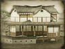

Basic Unit Statistics (can be modified by difficulty level, arts, skills, traits and retainers)
| Recruitment Cost | 1090 | |
| Upkeep Cost | 150 | |
| Melee Attack | 19 | 54% |
| Charge Bonus | 15 | 30% |
| Bonus vs Cavalry | 0 | 0% |
| Melee Defence | 6 | 17% |
| Armour | 2 | 13% |
| Morale | 12 | 24% |
Strengths & Weaknesses
- Very good in melee.
- Weak against missile attacks.
- Weak against cavalry.
- Good morale.
Abilities
- Banzai - This unit can enter into a frenzied state for a short period of time, temporarily increasing its speed, charge and melee attacks, and making it unbreakable.
Requires
- Buildings: 
- Religions:

Description
These katana-armed warriors are exceptionally brave, and deadly in close combat.
The shogitai are the epitome of traditionalist Japan, charging into combat with drawn swords. They are shock troops, and will break an enemy line. If they can close with the enemy, they will do fearful slaughter, as they are deadly when attacking in melee and have very good morale; they think less of defence, and so need some careful handling. They are vulnerable to rifle fire, as they have no counter to it, other than to close with their tormentors: this is a deadly risk. If left foolishly exposed or isolated they will also be ridden down by cavalrymen. Despite 250 years of Tokugawa rule and a mostly enforced peace, the old skills of the samurai had not been entirely discarded in the rapidly modernising Japan of the Meiji era. Bushido had become a formalised study rather than a practical set of warrior skills, but that did not make individual swordsmen any less deadly. The samurai, alone of all the social classes, had been permitted to keep their weaponry, and they had kept alive the skills needed to use traditional arms. These traditions would be kept alive in the very modern Imperial Japanese Army, something that would probably have surprised the shogitai!